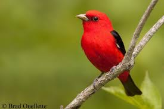
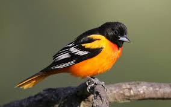
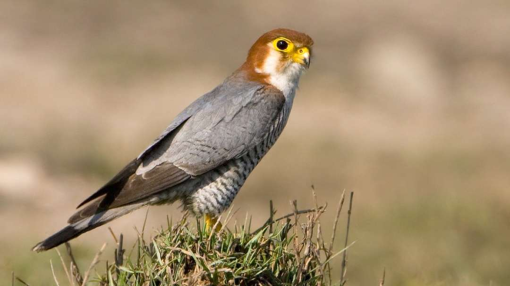
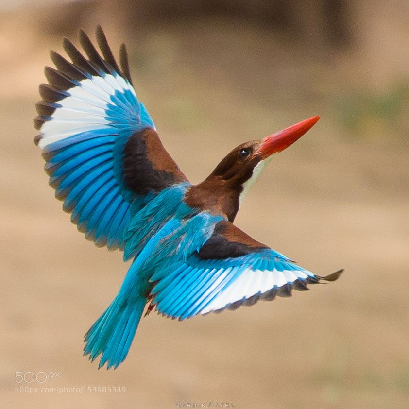

HOME GETSTARTED PHOTOS GEAR FORUM
WELCOME
Welcome to our fake birdwatching site.If this were real site,it would be the ideal place to come to learn more about birdwatching,whether you are a beginner looking to learn how to get into birding,or an expert wanting to share ideas,tips,and photos with other like-minded people.
So don't waste time!Get what you need,then turn off that computer and get out into the greate outdoors!
|  |  |
|  |  |